Llama4 caught ratio vs number of segments
See code at
plot_robot_emulation.py
Table of Contents
Schissel v1 Pool
Schissel v2 Lake
Boy Scout
Triplett v1 Rookie
Triplett v2 Cat Lady
Hester v1 Park
Hester v2 Church
Panic
Do Something
Bear
Stein
Costa
Schissel v1 Pool
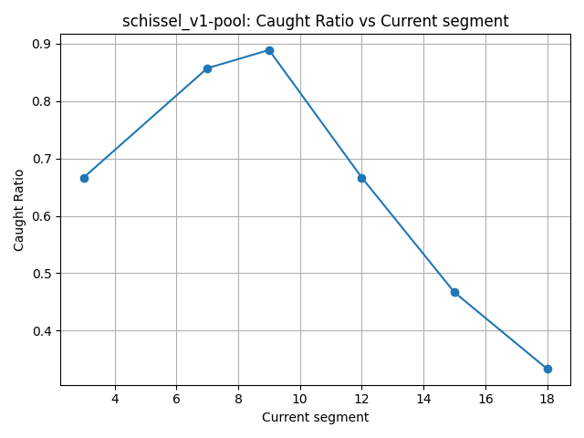
Schissel v2 Lake
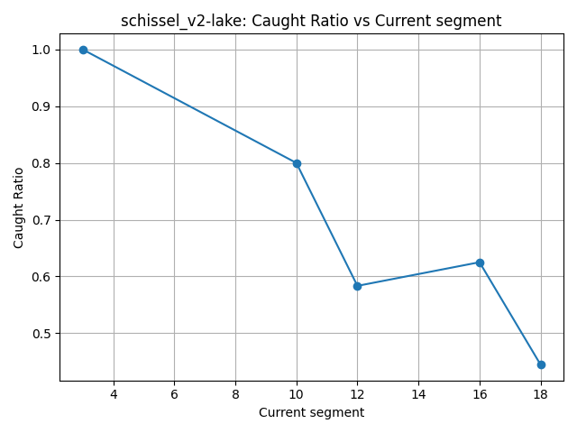
Boy Scout
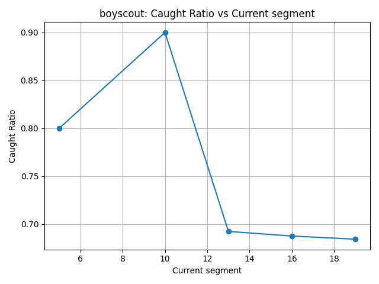
Triplett v1 Rookie
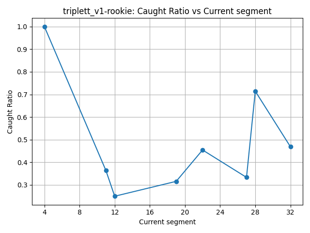
Triplett v2 Cat Lady
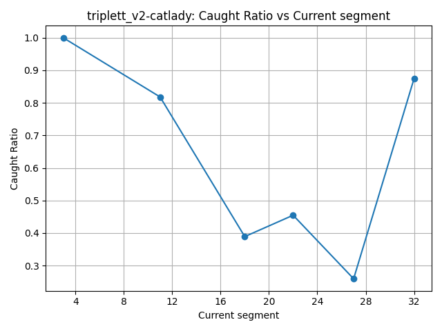
Hester v1 Park
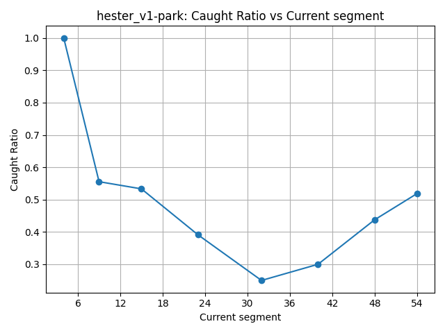
Hester v2 Church
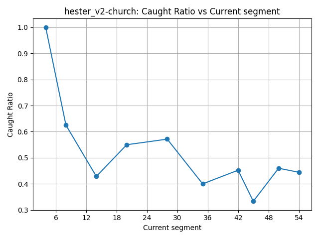
Panic
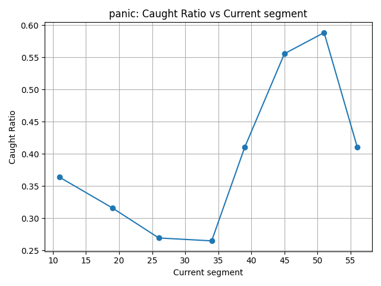
Do Something
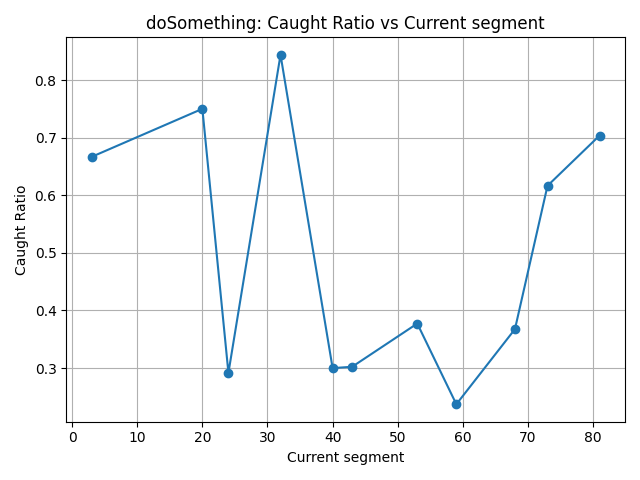
Bear
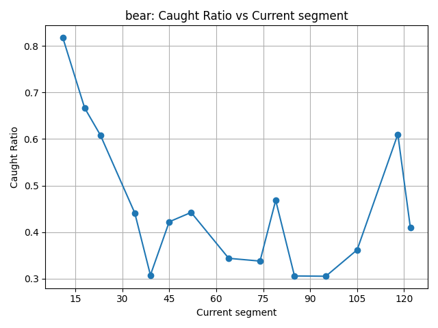
Stein
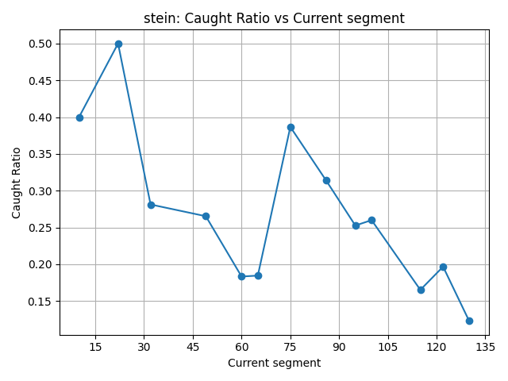
Costa
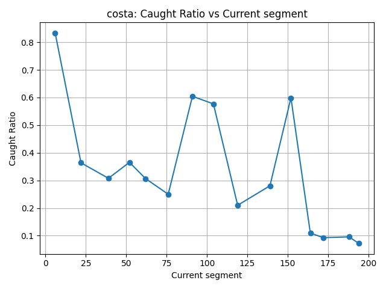